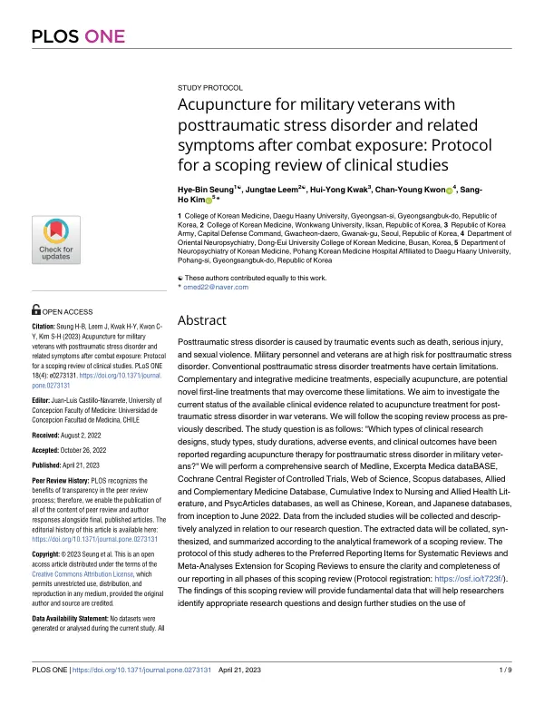

Acupuncture for military veterans with posttraumatic stress disorder and related symptoms after combat exposure: Protocol for a scoping review of clinical studies
Seung HB, Leem J, Kwak HY, Kwon CY, Kim SH
PLOS ONE 18(4):e0273131

첫 장 · 오픈액세스First page · open access
논문 소개Summary
외상후스트레스장애는 죽음, 심각한 부상, 성폭력 같은 사건을 겪은 뒤에 생깁니다. 전투에 참여하는 군인과 참전군인은 그런 사건에 노출될 위험이 특히 높은 집단입니다. 기존 치료에는 한계가 있고, 침을 비롯한 보완통합의학이 그 한계를 메울 수 있는지 관심이 이어져 왔습니다. 그러나 참전군인을 대상으로 한 침 연구가 어디까지 와 있는지 정리한 자료가 없었습니다.
이 논문은 그 현황을 살피기 위한 주제범위 문헌고찰의 연구계획서입니다. 연구 질문은 참전군인의 외상후스트레스장애에 대한 침 연구가 어떤 설계로, 어떤 기간에, 어떤 결과 지표와 이상반응을 보고했는가입니다. Medline, EMBASE, Cochrane Central, Web of Science, Scopus, AMED, CINAHL, PsycArticles와 중국어·한국어·일본어 데이터베이스를 처음부터 2022년 6월까지 검색하기로 했습니다. 자료는 두 사람이 독립적으로 뽑아 주제범위 문헌고찰의 분석 틀에 맞추어 정리하고, 보고는 PRISMA 확장판을 따릅니다.
계획서이므로 결과는 없습니다. 이 계획으로 수행한 고찰은 같은 해에 나왔고 이 목록의 INT-71입니다. 지진 생존자를 대상으로 한 같은 형식의 계획서가 INT-61이며, 두 연구는 재난과 전투라는 서로 다른 외상 경험을 같은 방법으로 살핀 짝입니다.
Post-traumatic stress disorder follows events such as death, serious injury or sexual violence. Military personnel in combat and veterans are at especially high risk of such exposure. Conventional treatment has limits, and interest has grown in whether complementary and integrative medicine, acupuncture in particular, can address them. But no account existed of how far research on acupuncture for veterans had come.
This paper is the protocol for the scoping review that would give that account. The research question was what study designs, durations, outcomes and adverse events have been reported for acupuncture in military veterans with post-traumatic stress disorder. Medline, EMBASE, Cochrane Central, Web of Science, Scopus, AMED, CINAHL and PsycArticles, along with Chinese, Korean and Japanese databases, were to be searched from inception to June 2022. Two reviewers would extract data independently and organise it within the analytical framework of a scoping review, with reporting following the PRISMA extension.
Being a protocol, it reports no findings. The review carried out under this plan appeared the same year and is INT-71 in this list. A companion protocol for earthquake survivors is INT-61; the two examine different traumatic exposures, disaster and combat, by the same method.
인용Cite
Seung HB, Leem J, Kwak HY, Kwon CY, Kim SH. Acupuncture for military veterans with posttraumatic stress disorder and related symptoms after combat exposure: Protocol for a scoping review of clinical studies. PLOS ONE. 2023;18(4):e0273131. doi:10.1371/journal.pone.0273131